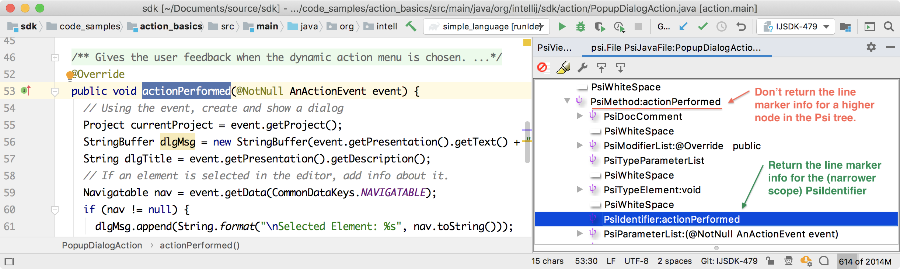
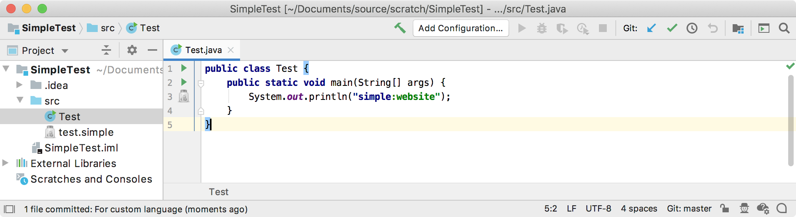

8. Line Marker Provider
Line markers help annotate code with icons on the gutter. These markers can provide navigation targets to related code.
- 8.1. Define a Line Marker Provider
- 8.2. Best Practices for Implementing Line Marker Providers
- 8.3. Register the Line Marker Provider
- 8.4. Run the Project
8.1. Define a Line Marker Provider
A line marker provider annotates usages of Simple Language properties within Java code and provides navigation to the definition of these properties. The visual marker is a Simple Language icon in the gutter of the Editor window.
The Simple Language marker provider subclasses RelatedItemLineMarkerProvider.
For this example, override the collectNavigationMarkers() method to collect usage of a Simple Language key and separators:
// Copyright 2000-2020 JetBrains s.r.o. and other contributors. Use of this source code is governed by the Apache 2.0 license that can be found in the LICENSE file.
package org.intellij.sdk.language;
import com.intellij.codeInsight.daemon.*;
import com.intellij.codeInsight.navigation.NavigationGutterIconBuilder;
import com.intellij.openapi.project.Project;
import com.intellij.psi.*;
import com.intellij.psi.impl.source.tree.java.PsiJavaTokenImpl;
import org.intellij.sdk.language.psi.SimpleProperty;
import org.jetbrains.annotations.NotNull;
import java.util.*;
public class SimpleLineMarkerProvider extends RelatedItemLineMarkerProvider {
@Override
protected void collectNavigationMarkers( @NotNull PsiElement element,
@NotNull Collection< ? super RelatedItemLineMarkerInfo > result ) {
// This must be an element with a literal expression as a parent
if ( !(element instanceof PsiJavaTokenImpl) || !(element.getParent() instanceof PsiLiteralExpression) ) return;
// The literal expression must start with the Simple language literal expression
PsiLiteralExpression literalExpression = (PsiLiteralExpression) element.getParent();
String value = literalExpression.getValue() instanceof String ? (String) literalExpression.getValue() : null;
if ( ( value == null ) || !value.startsWith( SimpleAnnotator.SIMPLE_PREFIX_STR + SimpleAnnotator.SIMPLE_SEPARATOR_STR ) ) return;
// Get the Simple language property usage
Project project = element.getProject();
String possibleProperties = value.substring( SimpleAnnotator.SIMPLE_PREFIX_STR.length()+ SimpleAnnotator.SIMPLE_SEPARATOR_STR.length() );
final List<SimpleProperty> properties = SimpleUtil.findProperties( project, possibleProperties );
if ( properties.size() > 0 ) {
// Add the property to a collection of line marker info
NavigationGutterIconBuilder< PsiElement > builder =
NavigationGutterIconBuilder.create( SimpleIcons.FILE )
.setTargets( properties )
.setTooltipText( "Navigate to Simple language property" );
result.add( builder.createLineMarkerInfo( element ) );
}
}
}
8.2. Best Practices for Implementing Line Marker Providers
This section addresses important details about implementing a marker provider.
The collectNavigationMarkers() method should:
- Only return line marker information consistent with the element passed into the method.
For example, do not return a class marker if
getLineMarkerInfo()was called with an element that corresponds to a method. - Return line marker information for the appropriate element at the correct scope of the PSI tree.
For example, do not return method marker for
PsiMethod. Instead, return it for thePsiIdentifierwhich contains the name of the method.

What happens when a LineMarkerProvider returns marker information for a PsiElement that is a higher node in the PSI tree?
For example, if MyWrongLineMarkerProvider() erroneously returns a PsiMethod instead of a PsiIdentifier element:
public class MyWrongLineMarkerProvider implements LineMarkerProvider {
public LineMarkerInfo getLineMarkerInfo(@NotNull PsiElement element) {
if (element instanceof PsiMethod) return new LineMarkerInfo(element, ...);
return null;
}
}
The consequences of the MyWrongLineMarkerProvider() implementation have to do with how the IntelliJ Platform performs inspections.
For performance reasons, inspection, and specifically the LineMarkersPass queries all LineMarkerProviders in two phases:
- The first pass is for all elements visible in the Editor window,
- The second pass is for the rest of the elements in the file.
If providers return nothing for either area, the line markers get cleared.
However, if a method like actionPerformed() is not completely visible in the Editor window (as shown in the image above,) and MyWrongLineMarkerProvider() returns marker info for the PsiMethod instead of PsiIdentifier, then:
- The first pass removes line marker info because whole
PsiMethodisn’t visible. - The second pass tries to add a line marker because
MyWrongLineMarkerProvider()is called for thePsiMethod.
As a result, the line marker icon would blink annoyingly.
To fix this problem, rewrite MyWrongLineMarkerProvider to return info for PsiIdentifier instead of PsiMethod as shown below:
public class MyCorrectLineMarkerProvider implements LineMarkerProvider {
public LineMarkerInfo getLineMarkerInfo(@NotNull PsiElement element) {
if (element instanceof PsiIdentifier && element.getParent() instanceof PsiMethod) return new LineMarkerInfo(element, ...);
return null;
}
}
8.3. Register the Line Marker Provider
The SimpleLineMarkerProvider implementation is registered with the IntelliJ Platform in the plugin configuration file using the com.intellij.codeInsight.lineMarkerProvider extension point.
<extensions defaultExtensionNs="com.intellij">
<codeInsight.lineMarkerProvider language="JAVA"
implementationClass="org.intellij.sdk.language.SimpleLineMarkerProvider"/>
</extensions>
8.4. Run the Project
Run the simple_language_plugin in a Development Instance and open the Test file.
Now the icon appears next to line 3 on the gutter.
A user can click on the icon to navigate to the property definition.
